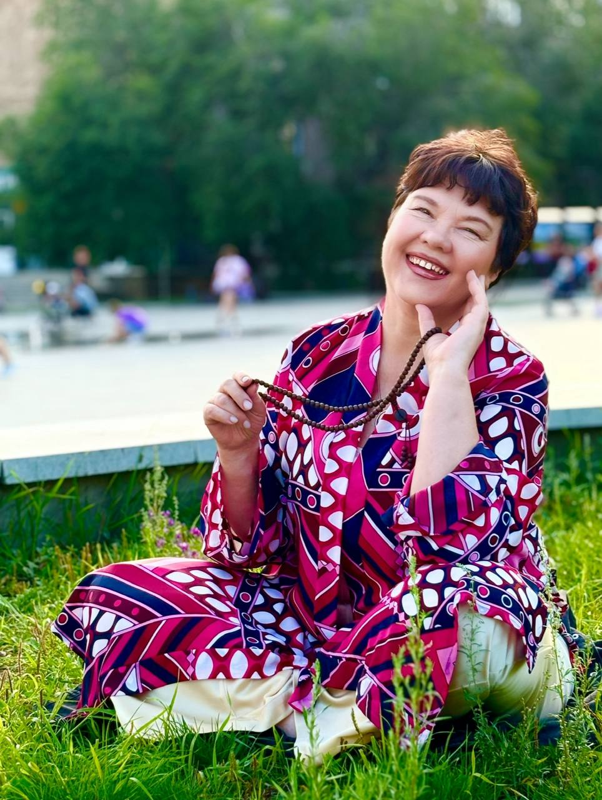
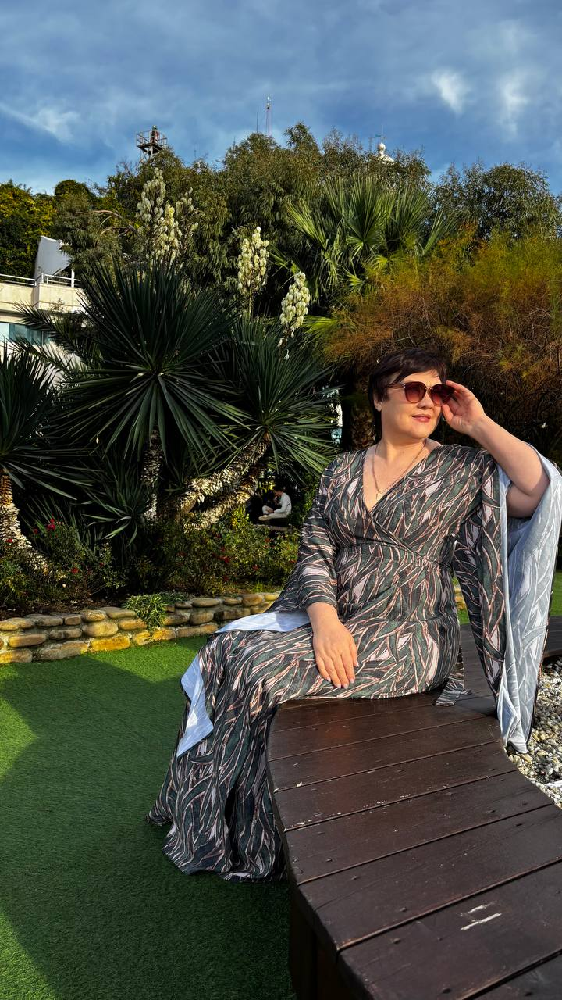
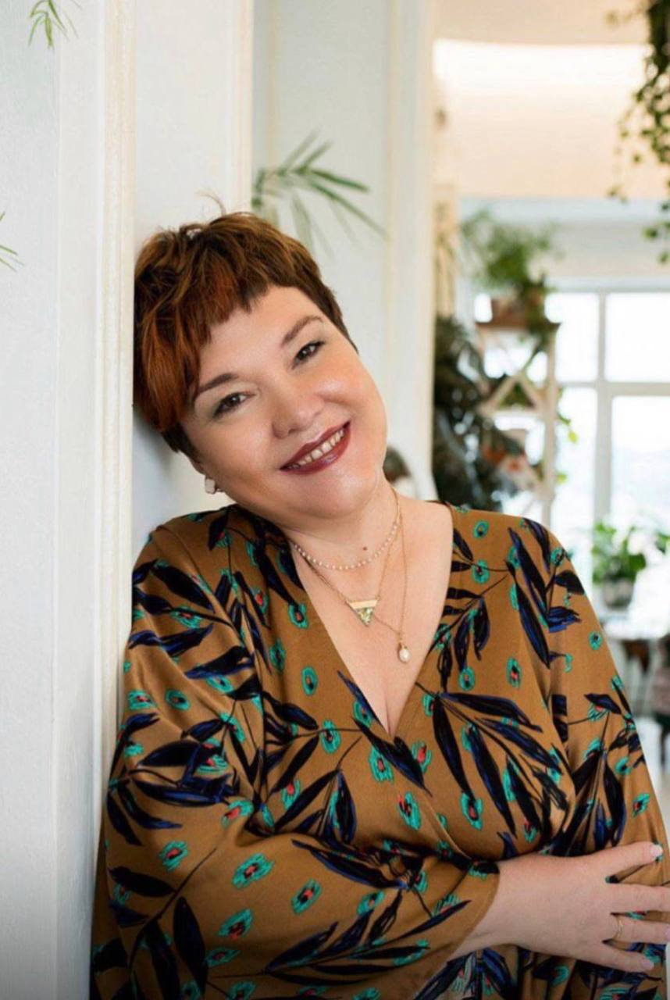

Обо мне
Энергокоуч и наставник энергопрактиков. Помогаю человеку лучше понимать себя, возвращать внутреннюю опору и постепенно становиться самостоятельнее в работе со своим состоянием и энергией.
Мне важно не сделать что-то за человека, а помочь ему понять, что он может делать сам.
Коротко о практике
Что для меня важно
Не давать готовую силу
Помогаю человеку обнаруживать и включать собственную.
Не делать за человека
Передаю инструменты, которыми можно пользоваться самостоятельно.
Переводить понимание в действие
Чтобы изменения происходили не только в мыслях, но и в жизни.
Не создавать зависимость
Возвращаю человеку самостоятельность и опору на себя.


Путь
- Более 25 лет назад. Начала искать способы восстановить себя после сложного периода со здоровьем.
- Постепенно. Изучала энергопрактики, проходила обучение и собирала опыт работы с состоянием и энергией.
- 6 лет назад. Начала профессиональную практику.
- Сегодня. Работаю с клиентами и передаю свой метод энергопрактикам.
Интерес к этой сфере не случаен: в моём роду по обеим линиям были те, кого раньше называли целителями, дед по отцовской линии и прабабушка по материнской. Со временем я прошла путь от учителя начальных классов и бухгалтера до энергокоуча с дипломом с отличием, и за 6 лет практики сложился мой авторский метод.
Я тонко чувствую людей и процессы и использую эту способность в работе, но никогда не делаю её главным аргументом. Глубокая вера тоже стала частью пути: сейчас я вожу паломнические туры и мягко, без давления, делюсь этим с теми, кому это откликается.
Как я работаю
«Я не вмешиваюсь в путь человека. Я лишь подсвечиваю его собственные шаги».

ЕкатеринаНачните с того, что сейчас действительно важно
Расскажите, что происходит и чего вы хотите изменить. На диагностике посмотрим, с какой стороны лучше начать.